2020生物中考最后王牌提分
判断题
1、生物的生活环境是指生物的生存地点（×）
解析：还有其影响生物生活分布因素
2、生物圈是指地球上如同一张薄纸的一个圈层（×）
3、（2020·娄底二模）环境是指生物周围的一切。（√）
4、细胞能够从周围环境中吸收营养物质而持续增长。（×）
解析：不能持续增长
除细胞核中有DNA外，线粒体和叶绿体内也有少量的DNA。（√）
注：七上人教版教材54页小资料
蛋白质是构成细胞的主要成分，青少年在长身体，因此青少年摄入量最多的应该是蛋白质。
解析：蛋白质是构成细胞的基础成分，摄入量最多的应该是糖类。
人体肾脏内贮存的原尿比膀胱内贮存的尿液要多得多。（×）
解析：原尿是循环形成，流经肾小囊时间短。
5、（湖南中考）将血液循环系统与公路运输系统的功能进行类比，毛细血管相当于车站。（ × ）
【解析】
试题分析：如果把人体内的血液循环系统与公路运输系统进行类比，毛细血管的作用与公路运输线最相似，乘客相当于血细胞，汽车站相当于人体的各个器官，故题干的叙述是错误的。
6、（内蒙古自治区中考）建立自然保护区是保护生物多样性最有效的措施。（ √ ）
7、（江苏中考）“OTC”为非处方药标志，此类药品可按药品说明书长期自行服用。（ √ ）
“是药三分毒”，每一种药物一般都有一定的毒副作用，长期自行服用，会危害人体健康．若需长期服用，要咨询专业医师后，方可服用。
8、（湖南中考）当人体免疫功能过强时，进入人体的某些食物和药物会引起过敏反应。（ √ ）
知识类：
1、竹外桃花三两枝，春江水暖鸭先知、黄梅时节家家雨，青草池塘处处蛙、红杏出墙、说明生物能对外界刺激作出反应
2、生物的生活环境不仅指生物的生存空间，还包括在于它周围的各种因素，具有片面性
3、环境+此环境中所有的生物的生态瓶就是一个做型生态系统
4、无机环境属于（非生物）部分，它为生物生存提供（物质和能量）。
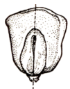5、人体共有 8大系统，它们由 神经系统和内分泌 调控。其中 神经 系统是最主要的调节系统
6、注意：1.取一粒浸软的玉米种子，去掉种皮，要按照右图的方向沿胚的纵轴方向切开，再向切面滴加稀碘液进行观察
7、①常见的双子叶植物：菜豆种子，各种豆类、瓜类、花生等
②常见的单子叶植物：玉米、小麦、水稻、高粱等粮食作物
双子叶植物主要营养存在与子叶，单子叶植物则胚乳
8、蕨类植物的地上部分是由叶柄和叶片构成的叶，横卧的是茎，地下须状的是根，其地上部分常常是叶
9、生物实验中使用的琼脂来源于某些藻类植物
10、一个玉米粒属于果实，一朵向日葵是一个花序
11、
染色体是细胞核中容易被碱性染料染成深色的物质，染色体是由DNA和蛋白质两种物质组成，基因位于染色体的DNA分子中，可见基因的化学本质是DNA
12、
立定跳远时，能够减少摩擦、缓冲机械压力的结构是关节软骨。能够使关节具有牢固性的结构是关节囊，它使两骨牢固地联系起来。能够有效防止出现脱臼现象的结构是关节囊
尿液中尿素、无机盐含量增高主要是肾小管重吸收了大部分水而不是葡萄糖被全部重吸收
13、当桑树等植物的茎被折断时，从茎的断面上会渗出白色的汁液，流出该汁液的结构是筛管，白色的汁液是有机物不是水，水是无色的
14、基因是决定生物性状的最小单位，基因在体细胞中都是成对存在的，在生殖细胞中是成单不成对。
15、呼吸道都有骨或软骨作支架，能保证气体顺畅通过，是气体进入肺的通道。呼吸道的纤毛能分泌黏液，能黏住灰尘和一部分细菌。呼吸道腺细胞能分泌黏液，能湿润到达肺部的气体，减少干燥的气体对呼吸道和肺的刺激。
16、碘伏是消毒防腐剂，汞离子解离后与蛋白质结合，起杀菌作用；创可贴，是人们生活中最常用的一种外科用药。创可贴具有止血，护创作用；感冒冲剂是治疗感冒的常用药物，属于非处方药；螺旋藻有促进钙吸收、提高免疫力、防止代谢紊乱和防止衰老的功能。对生殖，心血管、呼吸、消化及神经系统均有作用，不是家庭小药箱必备的常用药。
17、光合作用对维持空气的碳﹣氧平衡意义重大
18、手足口病的病原体是病毒，②天花③甲肝的病原体与手足口病的病原体都属于病毒，而肺结核由细菌引起的，血吸虫病属于血液传染病由细菌引起的，淋病由细菌引起的，蛔虫病属于消化道传染病由细菌引起的.
19、肺泡与外界的气体交换是通过呼吸运动来实现的，肺与血液是气体扩散原理。
20、抗原是一类能引起人体产生抗体的物质（如病原体等异物）。对人体来说，病原微生物、寄生虫、异种动物血清、异型红细胞、异体组织等都是抗原物质。抗体是指病原体侵入人体刺激淋巴细胞而导致淋巴细胞产生的一种抵抗该病原体的特殊蛋白质
21、生物多样性的意义包括：人类赖以生存和持续发展的物质基础，维系生态系统的结构和功能；对珍稀物种的研究具有潜在价值。
22、保护滇油杉、滇紫荆、云南樟等珍稀树种最为有效的措施是建立自然保护区
23、保护生物多样性的根本措施是保护生态系统
24、①靠近上表皮的叶肉细胞排列整齐，含有较多的叶绿体—栅栏组织，细胞呈圆柱形，排列整齐。
②靠近下表皮的细胞形状不规则，排列较疏松，含有较少的叶绿体—海绵组织。叶片的上下表皮都有气孔
③运输红墨水的导管在茎的内部的木质部内，因此最先变红的是茎的内部，而不是表面。
25、吞噬细胞具有防御和保护作用，存在于人体的血液和淋巴内。
26、中国科学院微生物研究所菌种保藏室保藏了很多菌种，这种菌种保藏的措施属于易地保护。
27、 我们算算术是利用语言中枢对语言、文字的刺激作出的条件反射，而狗没有语言中枢，是对具体的刺激作出的条件反射
28、淋巴细胞可以产生抗体，抗体可以与抗原发生特异性结合，促使抗原被吞噬细胞吞噬，或者使抗原失去致病性
29、维持系统平衡：要有相对稳定的物质循环。 （物质循环和能量流动）
30、裸子植物：松树，银杏 被子植物：金鱼藻，珙桐 区分关键：生殖器官
苔藓植物：地钱
31、水绵是多细胞藻类植物。所有藻类植物都生活在水中是错误的，教材上有说明，有的还生活在陆地上。
32、能使植物加粗的是：形成层（内有分生组织）。导管在木质部，树皮那有筛管。
33、种子的萌发与土壤中的营养成分含量无关。
34、地衣是真菌与藻类的共生体
35、各种生命活动所需要的能量来自于ATP。
36、唾液既有消化功能，又有免疫功能。
37、人体内可以消化和吸收的部位是小肠和胃。
38、氢氧化钠溶液可以吸收二氧化碳，碳酸氢钠溶液可以保持二氧化碳溶液浓度不变
39.异卵双胞胎：两个受精卵
40.把树皮剥开，破坏韧皮部，晒衣服在树上扎的铁丝会导致铁丝上部长瘤。
41、筛管运输有机物的动力是呼吸作用
42、石鳖和鱿鱼是软体动物，海马是鱼类，鸭嘴兽是哺乳动物
43、注意小肠的消化和吸收的功能部位。
44.导管是为一串管状死细胞所组成
45、血液进入肾脏后：肾动脉-入球小动脉-肾小球-出球小动脉-肾小管周围毛细血管网-肾静脉
46、突见光亮瞳孔不能及时调节，会导致 视觉神经 收到损伤。
47、吸气时，肋骨下降。
48、酸雨直接危害植物的芽和叶，利用幼苗做实验材料，实验效果快而明星。
49、形成饥饿或饱腹感的器官是大脑。
50、脂肪开始消化在小肠。
51、传出神经和效应器的任何一处受伤，机体只有感觉没有效应。
52、神经的基本调节是反射，不是反射弧。
12、科学家们已经对新型冠状病毒毒株进行了减毒，正在加紧研制新型冠状病毒肺炎的疫苗，下列有关说法错误的是
A．所注射的疫苗在免疫学上属于抗原 B．注射疫苗主要是为了保护易感人群
C．注射疫苗对患者有很好的治疗效果 D．病毒变异后注射的疫苗将失去作用
【答案】C 易错选择D
13、下列关于新型冠状病毒说法正确的是（ ）
A.具有细胞核 B.在普通光学显微镜下可见
C.具有遗传物质核酸 D.以上说法均不正确
【答案】C 易错选择D
14、培养新型冠状病毒时，应选用（ ）
A.冷却的牛肉汤 B.含有多种无机盐的营养液
C.固体培养基 D.活的鸡胚
【答案】D 易错选择D
15．下图为胸腔和肺示意图，当肋间外肌和膈肌收缩时，图中三部位压力由大到小顺序是
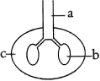A. a＞b＞c B. c＞a＞b C.a＞c＞b D.b＞c＞a
B 解析:膈肌收缩，胸廓会扩大，是吸气，外界气体进入肺。外界气压大于肺内气压。
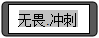
1.（2018·陕西）“春有桃花迷人眼，夏有莲叶荷田田”，不同的花儿在不同季节绽放，主要是受了（ C ）的影响，所以在异地引进作物品种之前应充分考虑，以免造成不必要的损失。
A．温度、水分 B．水分、日照 C．日照、温度 D．温度、土壤
[解答]光决定植物的生理和分布，也影响动物的繁殖和活动时间等。不同的花儿在不同季节绽放，这种差别主要是光照、温度不同迪成的。【考点】生态因素
生物体的结构层次
2.（2018•荆门）如图为动植物细胞结构模式图。对其结构和功能的叙述正确的是（ ）
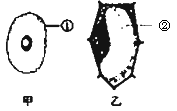
A．甲图结构①的功能是控制物质出入细胞，有害物质不能进入
B．乙图细胞放在清水中时间久了会涨破
C．甲乙所代表的细胞都有细胞生活所需的能量转换器叶绿体和线粒体
D．“炎炎盛夏，西瓜甘甜解渴”，主要与乙图中的结构②有关
【分析】如图所示：①细胞膜、②液泡
【解答】A、甲图中的①是细胞膜，可以控制物质进出细胞，防止有害物质进入细胞，但细胞死亡后，细胞膜的功能会丧失，有害物质就会进入细胞，错误。
B、乙图为植物细胞，具有细胞壁，对细胞具有支持和保护作用，将植物细胞放入清水中不会涨破，错误。
C、动物细胞内只具有线粒体，不具有叶绿体，植物细胞中一般具有线粒体和叶绿体，错误。
D、西瓜甘甜解渴是因为细胞细胞的液泡中含有大量的水分并溶解了一些甜味的物质，图乙中②为液泡，正确。
3．图中量曲线图表示一个人在两种状态下的呼吸情况．一些说法正确的是（ ）
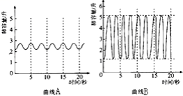
A．曲线A表示的呼吸频率为每分钟18次 B．曲线A比曲线B的呼吸频率快
C．曲线B的呼吸频率为9次 D．曲线B的每呼吸一次肺的通气量为5升
【答案】A
曲线B状态时，此人每次呼吸肺的通气量═潮气量-无效腔气量=5-1=4（升），D错误。
4.脊髓中灰质和白质的分布状况是（ ）
A．灰质在外层，白质在中央 B．灰质在外层，白质分散排列在中央
C．白质在周围，灰质集中在中央 D．白质在周围，灰质分散排列在中央
【答案】C
5．番茄果皮红色（D）对黄色（d）为显性，若将红色番茄（Dd）的花粉授到黄色番茄（dd）的多个柱头上，则黄色番茄植株上所结果实的果皮颜色、果皮基因型及种子中胚的基因型分别是（ ）
A．红色，dd，Dd 或 DD B．黄色，dd，Dd 或 dd
C．红色，Dd，Dd 或 dd D．黄色，Dd，DD 或 dd
【答案】B
“番茄果皮红色（D）对黄色（d）为显性”，则红色番茄的基因组成是DD或Dd，果皮黄色番茄的基因组成是dd。
（3）受精完成后子房的发育情况如图：
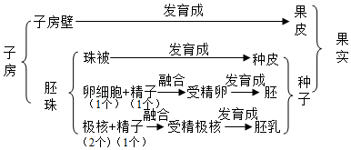
子房壁发育成果实的果皮，胚珠发育成种子。只有胚珠的卵细胞和极核接受了精子的遗传物质，因此基因发生改变的是植物产生的种子，而由子房壁发育成的果皮其基因组成没有改变。
因此果皮的颜色是由母株的基因决定，与授的花粉没有关系。所以“若将红色番茄（Dd）的花粉授到黄色番茄（dd）的多个柱头上”，则黄色番茄植株上所结果实的果皮颜色、果皮基因型分别是黄色、dd。
“若将红色番茄（Dd）的花粉授到黄色番茄（dd）的多个柱头上”，形成种子胚的遗传图解如图：
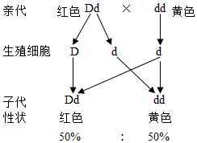，
从遗传图解看出，种子中胚的基因型是Dd或dd。 所以“若将红色番茄（Dd）的花粉授到黄色番茄（dd）的多个柱头上”，则黄色番茄植株上所结果实的果皮颜色、果皮基因型及种子中胚的基因型分别是黄色，dd，Dd或dd。
6．（2020湖南模拟）煮豆燃豆萁，漉豉以为汁。萁在釜下燃，豆在釜中泣。本是同根生，相煎何太急!要理解此诗的意境，需要有一定的生物知识，如图甲示黄豆种子的结构图，图乙示黄豆种子萌发成幼苗的过程图，图丙示黄豆受精过程示意图，图丁示豆荚和黄豆的形成图。请据图回答（[]内填序号或字母，____上填文字）
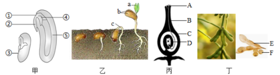
（1）萁即豆茎，豆茎在锅下燃烧，豆子在锅里哭泣，豆茎和豆子（图丁中的F）分别由图甲[_____]_____和图丙[_____]_____发育而成的。
（2）汁即豆汁，富含丰富的蛋白质，主要来自于图甲中的[_____]_____，在种子萌发过程中提供有机物，我们常吃的黄豆芽主要部分指图乙的[_____]_____。
（3）本市遍种植黄豆，黄豆收割后，下一届庄稼一般有显著增产效果，请你说出其中的道理____________。
2．④ 胚芽 D 胚珠 ⑤ 子叶 C 胚轴 豆科植物的根瘤菌能够将空气中的氮气转化为农作物吸收利用的含氮物质
【解析】（1）大豆种子萌发时，②胚根最先突破种皮发育成根，④胚芽发育成茎和叶，①胚轴发育成连接根和茎的部位。所以，豆茎由④胚芽发育而来，豆子即图丁中的F种子，由胚珠发育而来，对应图丙中的D。
（2）大豆属于双子叶植物，营养物质储存在③子叶里，我们常吃的黄豆芽的主要部分，主要是由乙图中的胚轴发育而成的。
7.肺泡中的氧气进入肺泡周围的毛细血管的血液中，至少通过的细胞膜层数是（ ）
A．l层 B．2层 C．3层 D．4层
【答案】D
肺泡外缠绕着毛细血管，肺泡壁和毛细血管壁都佷薄，只有一层上皮细胞，因此肺泡中的氧气进入血液需要经过两层细胞，如图所示：
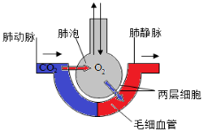。
而要穿过两层细胞，就要穿过四层细胞膜。
8.人喝醉酒后，语无伦次，走路摇晃，这是由于酒精已损伤了（ ）
A．大脑 B．大脑和小脑 C．小脑 D．脑干
【答案】B
【解析】大脑由两个大脑半球组成，大脑半球的表层是灰质，叫大脑皮层，大脑皮层是调节人体生理活动的最高级中枢，小脑的主要功能是使运动协调、准确，维持身体的平衡；人喝醉了酒，语无伦次、站立不稳、走路摇晃不定是大脑和小脑受麻痹。
9.请依据某些生物结构或部分结构示意图5，分析下列说法正确的是（ ）
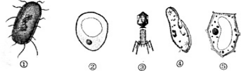
A．①无成形的细胞核，不能独立生活。B．①④进行的是分裂生殖，③必须寄生在活细胞内C．①的休眠体为芽孢，③离开活细胞通常也会形成芽孢
D．②与⑤的主要不同是②无细胞壁和叶绿体
【答案】B
【解析】
A、①为细菌，为单细胞生物，无成形的细胞核，能独立生活，故A错误。
B、①细菌进行的是分裂生殖，④草履虫靠分裂生殖，③是病毒，必须寄生在活细胞里才能繁殖，故B正确。
C、①细菌的休眠体为芽孢，③病毒离开活细胞通常会变成结晶体，故C错误。
D、②酵母菌和⑤植物细胞，主要不同是②酵母菌没有叶绿体，但有细胞壁，故D错误。
10.近几年,农家乐越来越受到人们的青睐，春季赏花，秋季尝果，乐哉悠哉。下列有关开花和结果说法错误的是（ ）
A. 开花后要经过传粉和受精才能结果
B. 雌花的子房发育成果实
C. 一朵基因型为AA的桃花，人工授aa的花粉，结出的桃子果肉细胞基因组成为Aa
D. 若果实中有5粒种子，则子房中有5颗胚珠
【答案】C
食用的果肉其实是果实的果皮，由子房壁发育而来，一朵基因型为AA的桃花授粉后发育成果实，果皮的基因组成应该也是AA。
11．（2019·海南中考真题）下列能正确表示血液通过肺泡周围毛细血管时氧含量变化情况的是（ ）
A．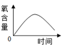 B．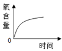
C．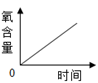 D．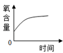
根据气体扩散作用的原理，氧气就会自肺泡扩散到血液中，直到平衡，所以血液中氧气的含量应该是增多，直至平衡，不能无限增多；二氧化碳会从血液中扩散到肺泡中，直至平衡，血液中的二氧化碳含量是逐渐减少的，直至平衡的。故选D。
12．（2019·山东中考）夏天的海水浴场，初学游泳的人有时会面临着溺水的危险。当溺水者被救后，一旦出现心搏骤停、呼吸停止的情况，必须立即进行心肺复苏术。施救的过程一般是
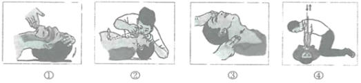
A．①④③② √ B．①②④③ C．④①②③ D．③④②①
【解析】
肺复苏的操作步骤：1.判断意识：双手拍打患者双肩并呼叫病人，观察有无反应。2.呼救帮助：立即呼叫其他医务人员帮助抢救。3.判断心跳、呼吸：观察胸廓起伏，判断心跳、呼吸情况。如心跳、呼吸停止，立即行心肺复苏。4.胸外按压：采用双手叠扣法，腕肘关节伸直，利用身体重力，垂直向下用力按压。5开放气道：清理呼吸道：将病人头侧向一方，清理口腔内异物。6.人工呼吸。7.持续心肺复苏，胸外按压与人工呼吸比为30：2，以此法周而复始进行，直至复苏。8.观察心肺复苏有效指征：观察心跳、呼吸：触摸颈动脉(10秒)，观察呼吸情况。所以题目中的正确顺序是：④胸外按压①开放气道②人工呼吸③触摸颈动脉，观察呼吸情况故选C。
13.请将图中字母进行排序，以表示该反射过程中神经冲动的产生和传导过程（提示：从a点开始）：_____。小华想起这个有趣的实验，便试做了一下，但膝跳反射现象不明显，你认为可能的原因是什么？_____。
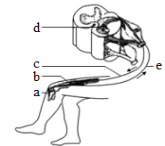
膝跳反射神经兴奋沿反射弧传导的途径是a感受器→e传入神经→d神经中枢→c传出神经→b效应器。膝跳反射的神经中枢在脊髓内，受大脑的控制，所以小华想起这个有趣的实验，便试做了一下，但膝跳反射现象不明显。原因可能是没有叩击到膝盖下面的韧带、腿部肌肉过于紧张（没有放松）、腿放置姿不正确、叩击力度过小等。